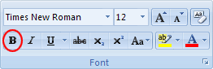

Free
computer Tutorials
|
Free
computer Tutorials
|
|
 home home |
|
|||||
Microsoft Word 2007 to 2010
Bold text in Microsoft WordTo make any part of your text bold in Microsoft Word, you have to highlight
the text. So using one of the highlight techniques you learnt in a previous
section, highlight the first line of the report. In other words,
highlight the words "Constable Tucker's Crime Statistics".
Your page should like this one: Incidentally, if your lines have too much space between them, highlight the lines from January down to Speeding. Click the highlighted text with your right mouse button. From the menu that appears, select Paragraph with your left mouse button. From the dialogue box, select the item that says "Don't add space between paragraphs of the same style": The space between the lines should then be reduced. We're now going to make bold the text we highlighted. There are two very easy ways to make your highlighted text bold. The first is by clicking the "B" icon on the Home tab at the top of Word. It looks like this:  With your text highlighted, click the "B" icon. Your text will turn bold. You might not be able to tell because your text will still be highlighted. Click anywhere on your blank page to get rid of the highlight. The "B" icon will change to this: That indicates that you have Bold text switched on. To turn off Bold text, highlight the text and then click the B icon with the left mouse button.
Use KeyboardAnother easy way to make your text bold in Microsoft Word is with the keyboard. To make text bold by using the keyboard, do the following
The Shortcut ToolbarA third way to make text bold is via the shortcut toolbar that appears
every time you highlight something. It first appears faintly. Move your
mouse over, however, and you'll see it more clearly: Again, click the B to get bold text. Click the B again to undo the bold text. When you have successfully changed the first line of the report to bold text, change the crimes themselves so that they are all bold. Change the Months of the year to bold text, too. When you're done, your document will look like this: As you can see, there is a distinct difference between the bold text and the normal text. We'll now use italics and underlining.
In the next part, we'll take a look at Italics and Underlines. <--Back to the Word Contents Page View all our Home Study Computer Courses
|
||||||
|